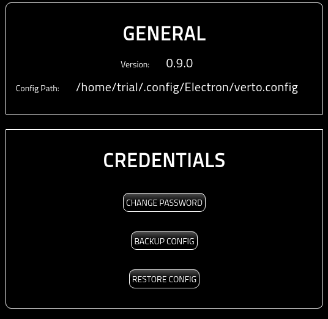
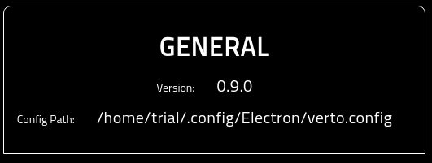
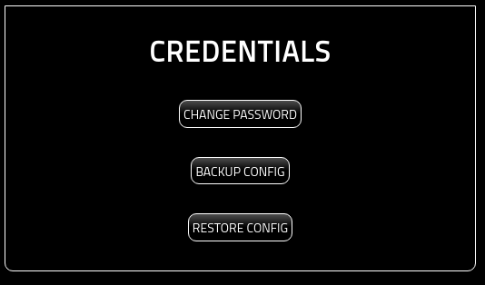

Settings¶
About¶
This page provides details on using the settings page.
Settings Page¶
Once open, you will be presented with the following screen.
General Settings¶
This section of the page provides the general, read only, settings of the wallet.
The Version showcases what version of Verto you are running.
The Config Path identifies where the verto.config file is being stored.
Credentials¶
This section provides access for you to modify, backup, and restore Verto credentials.
The three options are:
Change Password: Change the Verto password. For more information on changing your password, please see here:
Backup Config: Allows you to download a copy of the Verto config encrypted with the current wallet password. Simply click the ‘BACKUP CONFIG’ button and you will be presented with a file system explorer to choose where to store it.
Restore Config: Allows you to restore Verto config to a previously saved config file. Note that the password for the restore file may be different than the current Verto password.
For more information on retoring your config, please see the following: